VLM reasoning over time series
A model that can see a series and answer about it.


Problem
See a series. Answer about it.

Describe
What is this series doing?
Trend, seasonality, a spike, a regime change.

Compare
How do two windows differ?
Same shape, different amplitude? Same event, twice?

Explain
Why did that happen?
Cause, order of events, what the pattern implies.
Problem
What I actually evaluate

TSExam · MCQ
Exam-style understanding
What is the primary cyclic pattern observed in the time series?
A SquareWave · B SineWave · C SawtoothWave · D No Wave

ChatTS · open QA
Language + numbers
How large is the spike at timestamp t?
Trend, seasonality, local features — values have to be right.

TSRBench · temporal relation
The north star
The series contains a sharp spike, a drop to a new baseline, and a high-frequency burst. What is their chronological order?
Related work
Three ways people do time-series reasoning
Different interfaces into an LLM. Each throws something away.

1 · Text
Series as tokens
Dump numbers + context into a language model. Time-MQA.
Shortcoming: OpenTSLM’s analysis — serializing a series as text is costly. Context dies; shape is not a first-class object.

2 · Native TS
A series encoder
Patch-MLP or SoftPrompt into the LLM. ChatTS, OpenTSLM. The option many people use.
Shortcoming: does not ride VLM stacks. The LLM has to be adapted to latent time-series tokens.

3 · Chart VLM
Plot, sometimes + table
One VLM on rendered views. LLaTiSA is plot + numeric table — still one VLM.
Our bet: reuse vision. We use two geometries (chart + delay), not plot+table.
Related · text
Tokens in the context die on length
Time-MQA dumps digits into the prompt. OpenTSLM measured the cost — even learned tokens in the LLM explode. Digit strings are denser still.
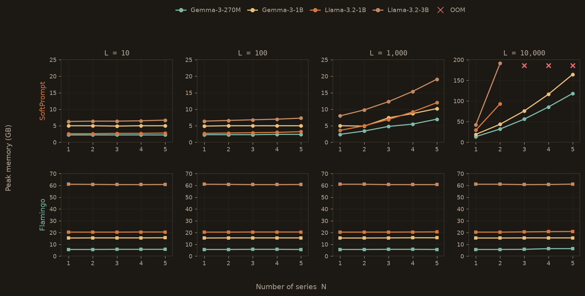
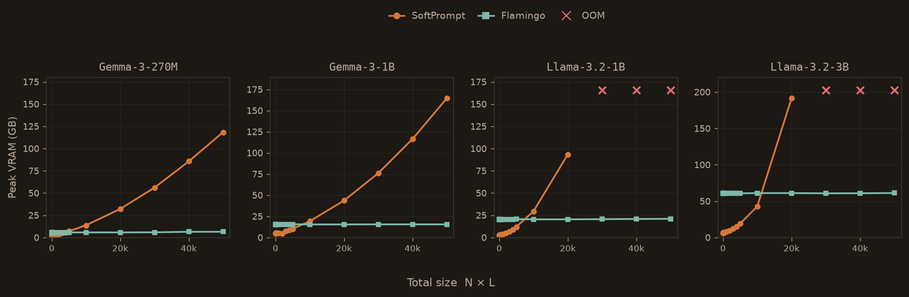
Related · native TS
Patch, encode, feed the LLM
ChatTS, OpenTSLM. The usual native-TS fix for token explosion — and the option many people use.
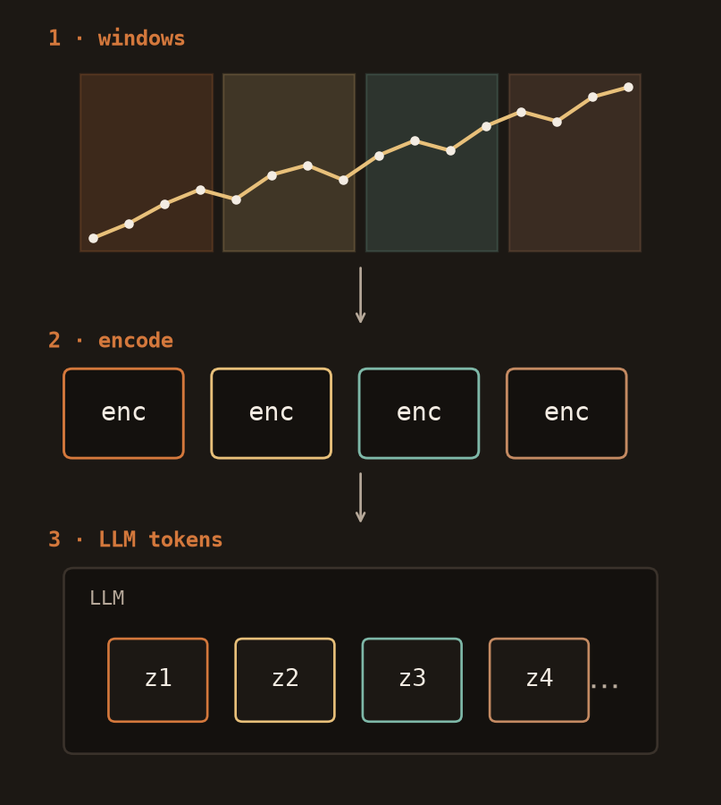
What you get
Compressed, numeric
Beats dumping digits. Local temporal structure stays in the patches.
The tax
You leave the VLM stack
No pretrained ViT. No VLM instruction-tuning. The next backbone drop is not a free upgrade — you maintain a series encoder.
Still one view
1D windows, not a picture
The LLM must learn a new token type. Shape is not something vision already knows how to see.
This work
Four contributions
The rest of the talk is this spine. Each cell is the hard part, not the slogan.
1 · Data
Toy, domain-locked, or scarce
Public TS–text is exam-easy, medical-narrow, or thin on captions and reasoning. I extend TSExam and ChatTS; CaTS I use as-is.
2 · Arch
Two views × N channels
Chart and delay, many series, one LLM. The hard part is making every view and every channel survive — not drawing a second plot.
3 · Train
What, how long, when to stop
Which data and which task at each stage, for how long, and a gate that says it worked. Own recipe, not a copied schedule.
4 · Results
Beat them on their benches
One stack, official protocol on TSExam, ChatTS, and TSRBench — against the methods that own each. Numbers later.
Contribution 1 · data
What’s in the three repos
The series and their attributes — not the exam protocol. Next slide is what I built on top.
TSExam · Cai et al. 2024
Controlled synthetic objects, composed
11 base objects: linear / exp / log trend, constant, white noise, random walk, sine / saw / square, MA, AR. Combined additively, multiplicatively, or concatenated; length 128. Some items are a lagged or Granger pair. Encodes pattern, noise, anomaly, similarity, causality — generators, not sensors.
I extend this.
ChatTS · Xie et al. VLDB 2025
Attribute pool → exact series
4 trend · 7 seasonality · 3 noise · 19 local fluctuations, combinable, with amplitudes and positions. A GPT selector picks a subset given one of 567 metric names. Alignment is univariate descriptions plus multivariate shape / local correlation; Evol-Instruct then writes Q&As from that pool. Still generated, not a sensor.
I extend this.
CaTS · Zhou, Yu et al.
Real windows + context
11 domains: air quality, borders, crime, demography, injuries, COVID, CO2, diet, Walmart, retail, agriculture. Each sample is a triplet — numeric crop, metadata (units, place, time span, mean / min / max), and a line plot. ~16k oracle captions on those triplets. Rose Yu’s data, not mine.
I use this as-is.
Contribution 1 · data · captions
Gold by construction
Shipped first. Attributes are read off the generator — not measured from the array, no LLM labeler. The caption is the gold answer.
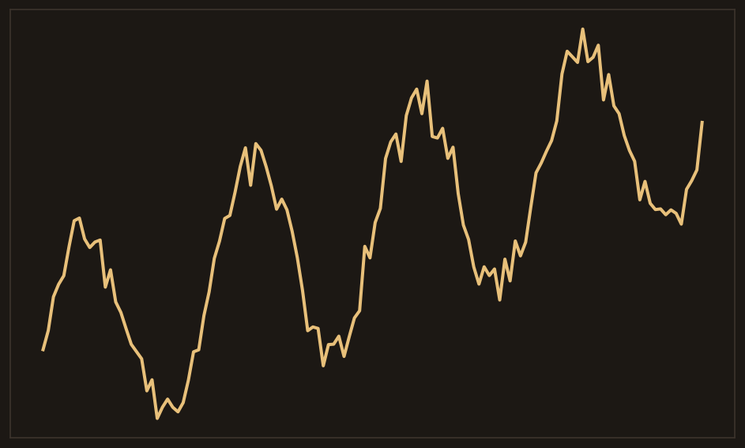
Gold caption
What the model should say
“An upward linear trend plus a sine wave with period ~32 and amplitude ~2.5, with gaussian white noise.”
Why it’s gold
Generator, not a labeler
Trend direction, period, amplitude, noise process — all from the object’s parameters. Template + randomization. Deterministic render.
Contribution 1 · data · reasoning
Then questions — still on
Same objects, new questions. Each carries a gold answer and a gold trace. More operators still being added.
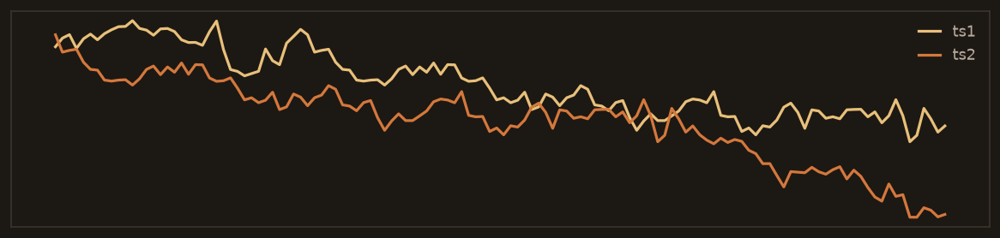
Lagged pair
Is series 2 a lagged version of series 1?
Gold: yes — lag in 30–45.
Trace: ts2 = ts1 shifted by 36. Known because we injected the lag.
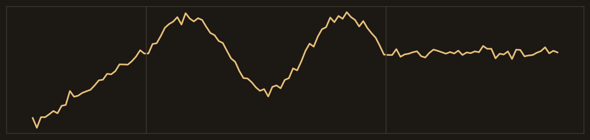
Segment order
Which order matches the plot?
Gold: upward trend → sine → flat.
Trace: concatenated those three objects. Known because we built the series.
Contribution 2 · architecture
One reasoner. Two views.
Not two models. Not a bigger ViT on one plot.
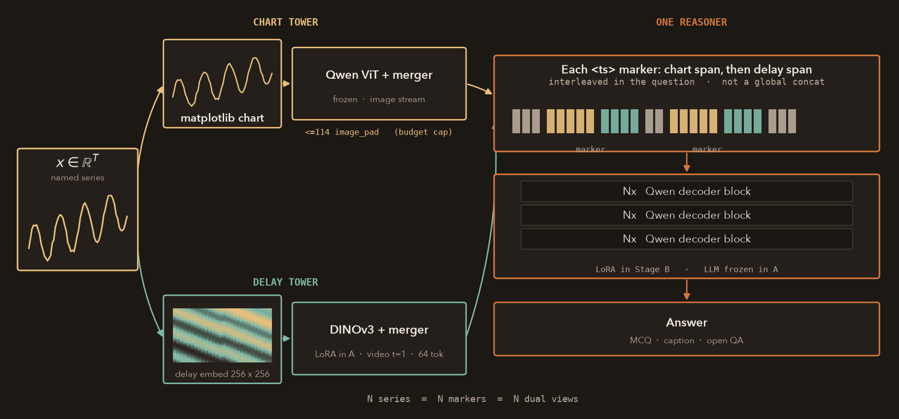
Contribution 2 · architecture
Why two views — measured
Three 8B ablations. Complementary failures, not a bigger ViT.
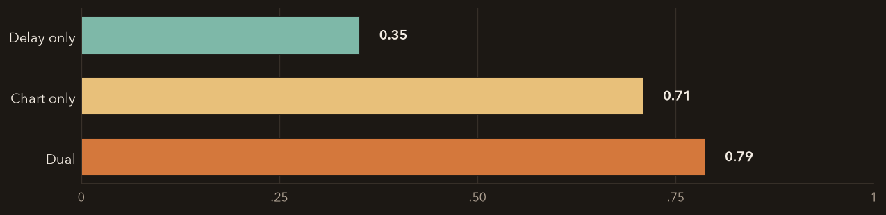
Delay alone
Numerical collapses
ChatTS A num: delay 0.35 · chart 0.71 · dual 0.79. Scale-invariant on purpose. B matches.
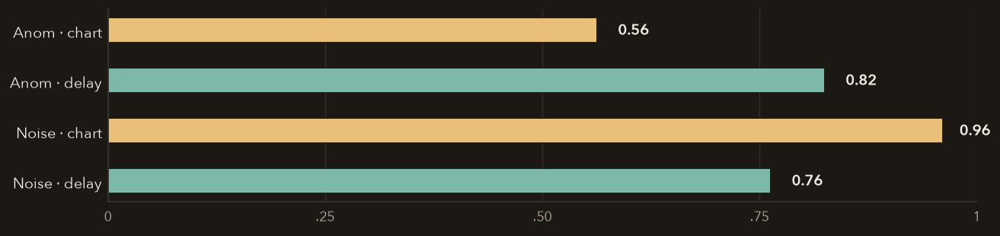
By category
Different winners
Anomaly: delay 0.82 vs chart 0.56. Noise: chart 0.96 vs delay 0.76. Same 8B, same data.
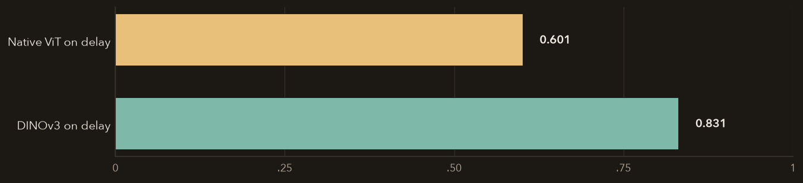
Native ViT ≠ delay
Cannot LoRA it into DINO
Same delay images. qwendelay 0.601 vs DINOv3 0.831. Second geometry needs a second tower.
Contribution 2 · architecture
N series. N markers. N dual views.
Multivariate is a contract, not a reshape. I caught it in the collator.
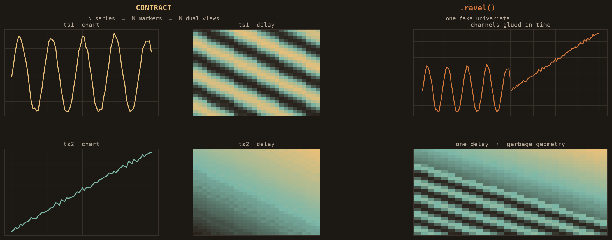
Contribution 3 · training
See, then reason, then prefer
Same shape as LLaVA — the document is a time series. Not their schedule.
A · locked
Perception
What a series is — trend, season, noise.
Data Gold captions from the generator, ChatTS align captions, CaTS as-is.
How Delay-tower LoRA. LLM frozen.
B · locked
Reasoning
How to answer about a series.
Data Exam MCQ, ChatTS QA, numeric. Traces on the exam mix.
How Merge A. LoRA the language model.
C · in progress
Prefer
Upweight good answers, downweight bad ones.
Data Gold TR traces — same generators as the data slides.
How Still the language model. Working on 9B; not how 8B won the three-bench.
Contribution 3 · Stage A
Perception — what a time series is
Freeze the LLM. Train the delay tower on captions. Components, not exam letters.
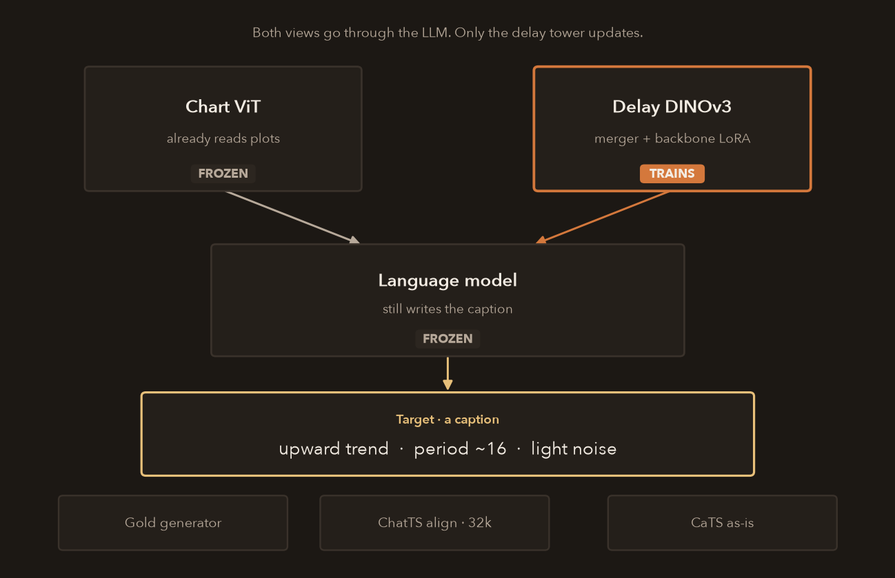
The stall
~61.8%
Instruction-only, 50+ configs. The model could talk. It could not see.
The task
Name the components
Gold captions, ChatTS align, CaTS as-is. Trend, season, noise — not A/B/C.
Then Stage B
Seeing first, answers later
Decouple how to see from how to answer. Stage B is where letters start.
Contribution 3 · Stage B
Reasoning — how to answer about a series
Merge A. LoRA the language model. Teach it how to answer.
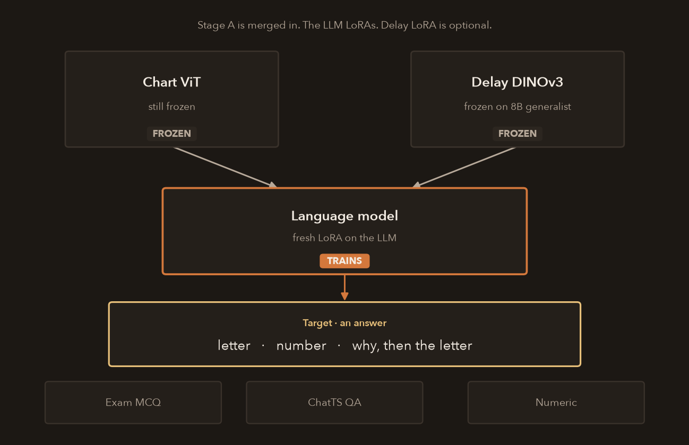
Merge A
Vision stays
Stage A is merged in. On the 8B generalist, vision stays frozen. 9B/27B also LoRA the delay tower.
The task
Questions, not captions
Exam MCQ, ChatTS QA, numeric. Letters and numbers — not “what is this series.”
Traces
Why, then the letter
Exam mix: how to get to the answer. TSRBench mix did not need traces.
Contribution 3 · Stage C
Prefer — only if the why is true
If every rollout is already right, GRPO does nothing. Gold traces first.
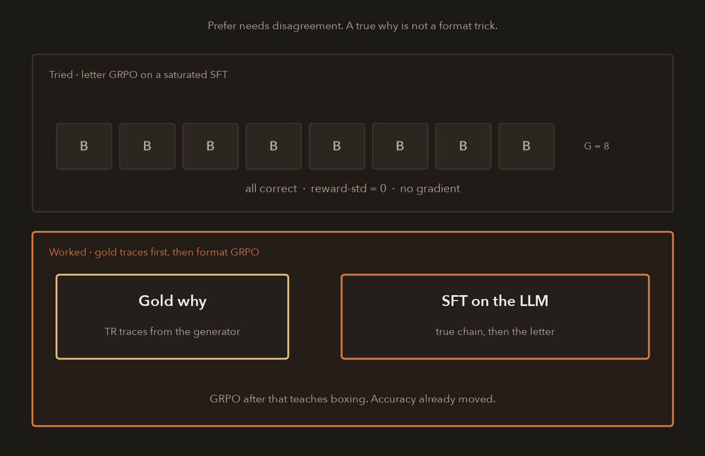
The stall
No contrast, no gradient
Letter GRPO on a saturated SFT: ~90% of groups had zero reward-std. 0.795 vs 0.796.
The miss
Format is not a why
Rewarding a reasoning wrapper made wrong traces more confident. −11 pp.
What worked
Gold traces, then box
SFT on generator TR traces. GRPO after that teaches format. Accuracy already moved.
Contribution 4 · results
One stack. Three official protocols.
Open on par with the published boards. Closed still ahead on TSRBench. LLaTiSA reports HiTSR — different board.
TSExam · n=746
| Our 8B | 0.926 |
| GPT-4o | 0.87 |
| Gemini-1.5-Pro | 0.76 |
| MiniCPM-7B | 0.55 |
Paper, plots, round 0, weighted by category n. Not a GPT-4o re-run on our harness.
ChatTS · cat A / B
| Our 27B | 0.92 / 0.90 |
| ChatTS-14B | 0.89 / 0.86 |
| GPT-4o vision | 0.61 / 0.47 |
Paper Table 3 overall cat. Our 8B already matches ChatTS-14B on numerical.
TSRBench · n=4,125
| GPT-5 | 55.6% |
| Our 8B | 45.6% |
| Qwen3-VL-32B | 44.9% |
| TimeOmni-7B | 36.7% |
Best open is a wash with the 32B chart VLM. Do not quote TimeOmni 49.4 — that is event prediction.
Contribution 4 · results
TSRBench — the closed gap is reasoning
Open on par overall. Perception is solved. The 10-point hole to GPT-5 is the hard slice.
Perception
0.87
Charts and delay already see. Not where we lose.
Prediction
0.50
Event prediction is strong. Forecasting is the drag inside this group.
Decision
0.37
Qualitative and quantitative choices. Still thin.
Reasoning
0.29
1,710 items. Etiological 0.20, temporal-relation 0.27. GPT-5 is 55.6% overall — this is the gap.
Contribution 4 · rigor
I killed a mix that helped the average
The target slice dropped five points. Missing primitives — not more buckets.
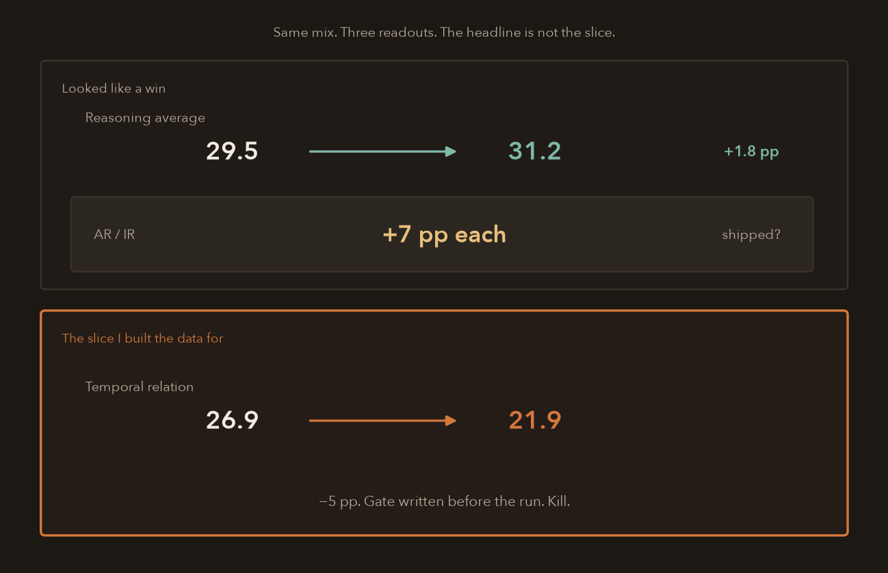
What looked fine
Average +1.8 pp
AR and IR each jumped about seven points. Easy to ship after the GPU was already spent.
What I watched
TR 26.9 → 21.9
The slice I built the data for. −5 pp gate, written before the run. Kill.
The diagnosis
Missing primitives
Stopped stacking buckets. Audited operators. Rebuilt the generators — not another TR dump.
Contribution 4 · scale
Small to choose. 8B still the ceiling.
Bigger is not automatically better on the north star. These are different campaigns — not one ranking.
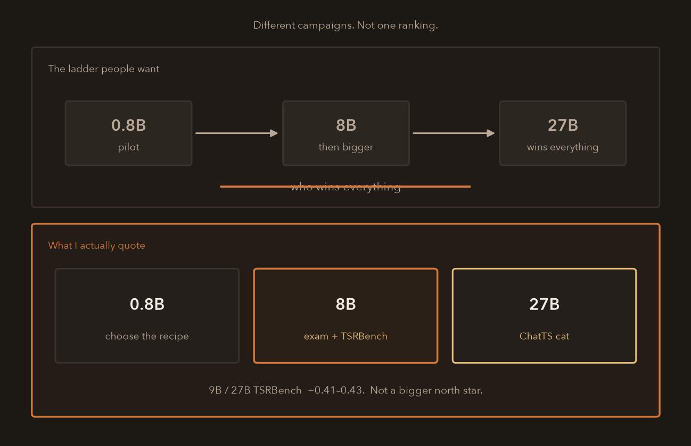
0.8B
Choose the recipe
Fast pilots. Kill mixes. Not the external hook.
8B dual
Quote this
TSExam and TSRBench. The numbers you already saw. Still the ceiling.
27B dual
ChatTS cat
The language-heavy board. Not TSRBench.
Transfer
If it admits an image, the stack transfers
Chart and delay here. A spectrogram on a vibration or a mic. Same VLM.
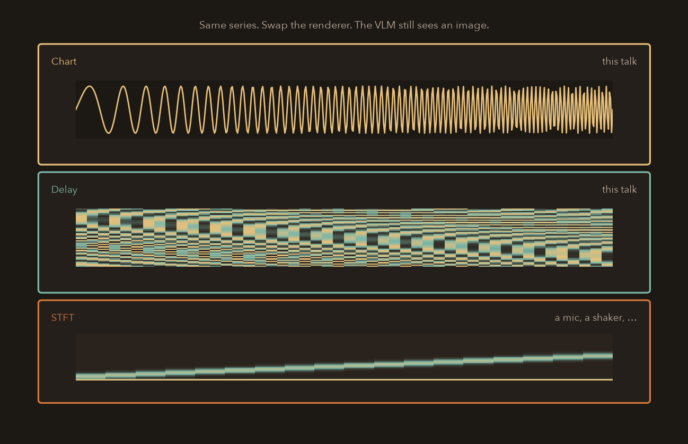
The contract
An image is enough
Pretrained ViT, same curriculum. You do not leave the VLM stack.
This talk
Chart + delay
Two geometries of a series. Amplitude and trend; topology.
Other sensors
STFT when frequency is the physics
A mic, a shaker. Still an image. Still questions about what it shows.
Close
Four things I want you to keep
Same spine as the board at the start.
1 · Data
Open repos are not enough
Captions and patterns you can trust. I extend TSExam and ChatTS; CaTS I use as-is.
2 · Arch
One reasoner — more views if they pay
Chart and delay here. Another geometry is another tower, not another model. Not plot+table.
3 · Train
See, then reason, then prefer
Perception first. Questions next. Preference is in progress — and only if the why is true.
4 · Results
Three official benches — then an image
Open on par; proprietary still ahead on the hard slice. If a sensor admits an image, the stack transfers.
Panel
One model for a mic and for telemetry?
Yes — one backbone. Not one renderer, not one rate.
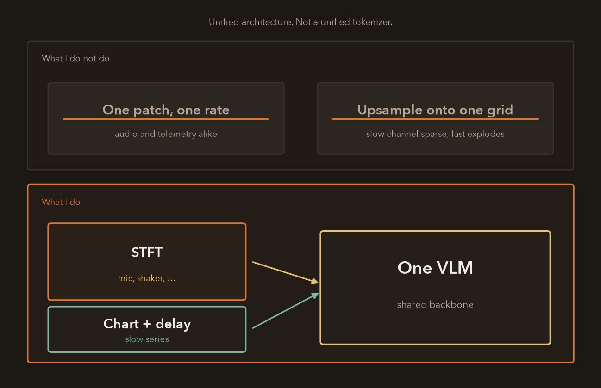
The FM bet
Share the backbone
One VLM. I would not recant into a zoo of specialists as the default.
The miss people make
Unification at the wrong layer
STFT when frequency is the physics. Chart and delay when it isn’t. Bake off vs two specialists on the task that matters.
The leak
Do not upsample
Clocks must agree. Do not interpolate telemetry onto the audio grid. Fuse coarser, or keep multi-rate tokens.
Panel
High- and low-frequency sensors, one model
Clocks must agree. Do not upsample telemetry onto the audio grid.
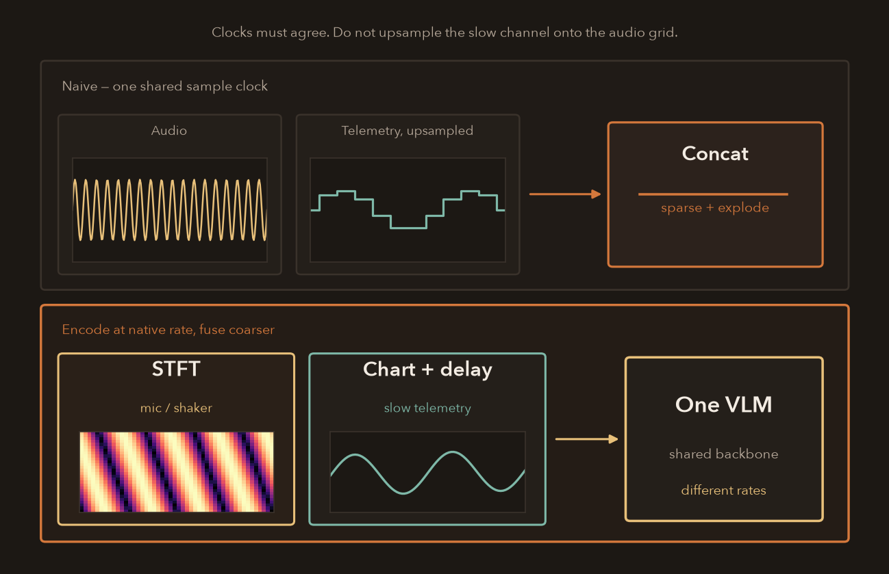
The trap
One shared sample clock
Audio at tens of kHz, telemetry at a few Hz. Upsample the slow stream and it is sparse; keep everything at audio rate and the sequence explodes.
Do this
Native rate, then fuse
STFT or short windows for the mic. Chart plus delay, or coarse patches, for the slow series. Cross-attend or pool onto a coarser time grid.
Same as 24
One architecture, not one renderer
Shared VLM. Different tokenizers. Alignment is a clock problem, not a patch-size problem.
Backup · serve
Serve the model you trained
Not a paper count. A parity gate: the served answers match the trained ones.
I ported the 9B dual stack through an inference engine (vLLM — the server, not “vision LLM”). 100 / 100 greedy answer parity vs Hugging Face on a local TSExam gate.
9B is the serve vehicle, not the north-star quote. 8B still owns TSExam / TSRBench on this talk.
Backup · numbers
Labeled by campaign. Don’t mix.
| Model | TSExam HF | TSRBench | ChatTS |
|---|---|---|---|
| 8B dual Stage B | 0.926 | 0.4565 | num matches 14B paper |
| 9B dual Stage B | 0.883 | ~0.41–0.43 | ~0.91 / 0.87 |
| 9B + C-RS | 0.9316 | inline 40.7 | — |
| 27B dual OFF | 0.921 | re-run @2048 | cat 0.92 / 0.90 |
| 0.8B | 0.890 | 0.405 | — |
Caption attr-recovery 0.72 · numeric medAE 0.14 · ICL-UCR micro 0.688 (trades off TSRBench). 122B FT letter-A — infra only, not a result.
Backup · backbone
One backbone vs two specialists
Shared trunk is the foundation-model bet. Not the same tokenizer for every rate.
Language still has BPE. Vision still has patches. Unification lives at the token layer, not one patch size for audio and CAN.
Bake off vs two specialists on a frozen task. Don’t recant into a zoo. Don’t religiously insist on one giant net.
Backup · clocks
Do not upsample mixed rates onto one grid
Sensors must share a clock or fusion leaks. Naive concat makes the slow channel sparse and the fast channel explode.
Same lesson as two geometries: don’t destroy the inductive bias to make the batch look rectangular.
Fuse on a coarser grid, or keep multi-rate tokens. Don’t interpolate telemetry onto the audio clock.
Backup · two tools
LDDBM vs the VLM — different jobs
Don’t pick an ideology.
LDDBM: modality translation in a shared latent (BCAI Haifa collab — research; I don’t claim it shipped in a BU).
VLM: language + image context, questions about a series. Event detect may want a native encoder. Choose by the frozen suite, not by papers.
Backup · irregular
Irregular sampling is a first-class case
Sensors drop. Fusion without a shared clock is leakage.
Completion + masking lineage (~70% discriminative, ~85% compute) — only if they go industrial telemetry.
One slide, not a paper recap. Sep 7 can promote this.
Backup · Stage C
What actually happened
Gold traces, then RL. Letter-GRPO on saturated MCQ was a no-op.
- Letter GRPO: 0.795 vs SFT 0.796 — ~90% of groups had zero reward-std.
- Reasoning-format GRPO: −11 pp (confident wrong chains).
- C-RS (SFT on gold TR rationales) then C-RL2: 9B TSExam 0.9316. TSRBench barely moved (+1.2 inline).
Don’t say “GRPO is how we got SOTA.”
Backup · eval
Parse-miss is not accuracy
A right letter in a wrong wrapper is a reliability bug. Promote this if the talk runs fast.
Schema / format failures tracked separately from TSExam / TSRBench scores.
Two eval bugs caught on thinking models: thinking never engaged; wrong EOS → runaway. Thinking-ON zero-shot destroys TSRBench (9B 0.166 vs 0.417 OFF). Don’t claim CoT as a free win.
Backup · multivariate
The data contract in one picture
Spoken path already has the ravel bug. This is the fallback they may ask about.
Dual collator
N charts + N delays
Named series, one marker each. Matches how the model was trained.
Mismatch fallback
One stacked figure
Older ChatTS eval path if marker counts disagree. TSRBench text often assumes one combined image — this model is per-series.
[C,T] under a TSExam ts key.